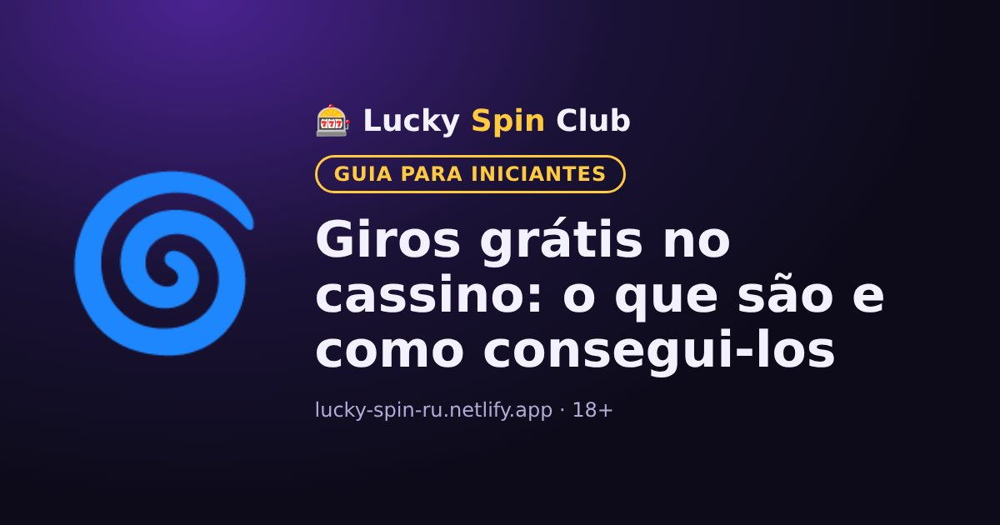

Início / Giros grátis
Giros grátis no cassino: o que são e como consegui-los

Giros grátis (free spins) são rodadas sem custo nos caça-níqueis. Eles podem vir de duas formas diferentes, e é importante não confundir.
Dois tipos de giros grátis
- Giros grátis de bônus do cassino. O cassino os dá pelo cadastro, por um depósito ou em promoções. Normalmente valem para um caça-níquel específico.
- Giros grátis dentro do caça-níquel. É um recurso do próprio jogo: por exemplo, saem três símbolos scatter e a máquina ativa rodadas grátis.
Como conseguir giros grátis de bônus
- No pacote de boas-vindas para novos jogadores.
- Ao depositar durante uma promoção.
- Em torneios e programas de fidelidade.
Veja as ofertas atuais na seção “Bônus” ou “Promoções” do cassino.
Condições dos giros grátis
- Valor do giro: definido pelo cassino, não pode ser alterado.
- Caça-níquel: os giros só funcionam no jogo indicado.
- Prazo: giros não usados expiram.
- Rollover dos ganhos: muitas vezes é preciso cumpri-lo. Saiba mais em “O que é rollover”.
Dica
Antes de ativar, veja por quantos dias os giros valem e se há limite de saque dos ganhos.
Quer experimentar? O cadastro leva cerca de um minuto.
🎁 Cadastrar e pegar o bônus18+ · Condições do bônus no site do cassino · ou compare os cassinos →
Perguntas frequentes
Dá para sacar os ganhos dos giros grátis?
Sim, mas muitas vezes só depois de cumprir o rollover e dentro do limite de saque, se as condições tiverem um.
Posso usar giros grátis em qualquer caça-níquel?
Em geral não: giros grátis de bônus valem apenas para o caça-níquel indicado nas condições da promoção.
Os giros grátis expiram?
Sim, eles têm prazo de validade. Giros não usados normalmente são cancelados depois disso.